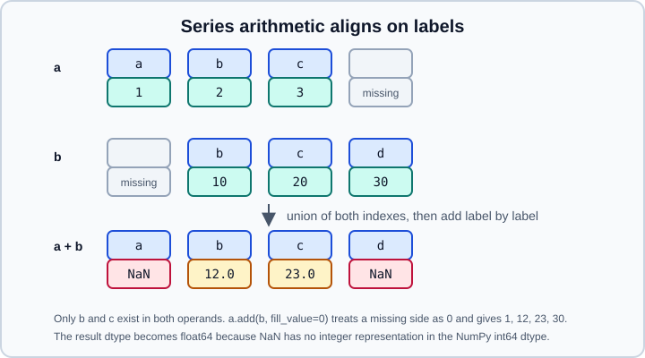

Series
|
This content was generated with the assistance of AI and should be verified against the official documentation before being relied on in production. |
A Series is a one-dimensional labelled array: a sequence of values that all share one dtype, plus an
Index that gives every value a label. Every column of a
DataFrame is a Series, and almost every pandas feature (selection, alignment,
missing data, grouping, time series) is first defined on it.
This page targets pandas 3.1 (3.1.0 was released on 22 October 2026) on Python 3.13 or 3.14. pandas 3.1 itself
supports Python 3.11 and requires NumPy 2.0.2 or later. Every example was run on pandas 3.1.0, NumPy 2.5.4 and Python
3.13, and the output shown is real. Examples assume import numpy as np and import pandas as pd. Related pages:
Essential Basic Functionality,
Data Types Overview,
Indexing & Selecting and
Missing Data.
Anatomy of a Series
A Series has three parts that matter in practice: the values (stored in one array with one dtype), the index (labels
for the values) and an optional name (used as the column name when the Series becomes a column).
import numpy as np
import pandas as pd
s = pd.Series([4.5, 7.2, -1.0], index=["a", "b", "c"], name="temp")
print(s)
print(s.dtype, s.index, s.name, s.shape, s.size, s.ndim, sep="\n")a 4.5
b 7.2
c -1.0
Name: temp, dtype: float64
float64
Index(['a', 'b', 'c'], dtype='str')
temp
(3,)
3
1Note the index dtype: since pandas 3.0 an index of strings has the dedicated str dtype, not object
(see Text Data & the str Dtype).
Creating a Series
The constructor is pd.Series(data=None, index=None, dtype=None, name=None, copy=None). The accepted data kinds
behave differently with respect to the index.
# From a dict: keys become the index, in insertion order
print(pd.Series({"x": 1, "y": 2, "z": 3}))
# A dict plus an explicit index: the index selects and orders the keys, missing keys become NaN
print(pd.Series({"x": 1, "y": 2, "z": 3}, index=["z", "x", "w"]))
# A scalar is repeated for every label of the index
print(pd.Series(5, index=list("abc")))
# A list or NumPy array gets a default RangeIndex
print(pd.Series(np.arange(3)))x 1
y 2
z 3
dtype: int64
z 3.0
x 1.0
w NaN
dtype: float64
a 5
b 5
c 5
dtype: int64
0 0
1 1
2 2
dtype: int64Rules worth remembering:
-
With a dict and an
index, the dict is reindexed: keys not in the index are dropped and labels not in the dict becomeNaN, which promotes an integerSeriestofloat64. -
With a list or array, the length of
indexmust equal the length of the data. Otherwise pandas raisesValueError: Length of values (3) does not match length of index (2). -
With a scalar and no index, the result has one element. To get a longer
Series, pass an index. -
dtype=converts on construction:pd.Series([1, 2, 3], dtype="float32"),dtype="Int64"(nullable integer) ordtype="Int64[pyarrow]"when PyArrow is installed. -
name=sets the name;pd.Series(other_series, name="new")keeps the data and replaces the name.
Default dtypes of the inferred kinds
| Data | Inferred dtype in pandas 3.1 | Notes |
|---|---|---|
|
|
The platform-independent 64-bit integer. |
|
|
|
|
|
The missing value forces float. Use |
|
|
The default string dtype since 3.0. Missing values are |
|
|
|
|
|
Mixed types fall back to |
|
|
|
|
|
Microsecond resolution is the default since 3.0. |
Does the constructor copy the data
With Copy-on-Write (the only mode since 3.0) pandas never lets two objects change each other silently, so
pd.Series(ndarray) copies the array by default. Pass copy=False to share memory with the array.
arr = np.array([1, 2, 3])
s = pd.Series(arr)
arr[0] = 99
print(s.tolist()) # [1, 2, 3] (the Series owns its own copy)
s2 = pd.Series(arr, copy=False)
arr[1] = 77
print(s2.tolist()) # [99, 77, 3] (shared memory: the array changed under the Series)Sharing memory is an optimisation for large arrays. Prefer the default unless you have measured a problem.
The Index and the name
The index is mutable as an attribute (you can assign a new one) but each Index object is immutable.
s = pd.Series([1, 2, 3], index=list("abc"))
s.index = ["x", "y", "z"] # replaces all labels at once
print(s.index.tolist()) # ['x', 'y', 'z']
print(s.rename(lambda label: label.upper()).index.tolist()) # ['X', 'Y', 'Z']
print(s.rename("score").name) # score (a scalar renames the Series)
print(s.reset_index()) # labels become a column, DataFrame result
print(s.reset_index(drop=True)) # labels are discardedSeries.rename is overloaded: a scalar or hashable changes the name, while a function, dict or Series changes the
index labels. Series.rename_axis("row") names the index itself, which is what reset_index uses as the column
name. See Index Objects for the full API.
Selecting values
Three accessors cover every case. Use them explicitly: they behave the same on every index type, which plain [] does
not.
| Accessor | Selects by | Slice end |
|---|---|---|
|
label, list of labels, boolean mask, callable |
inclusive ( |
|
integer position, list of positions, boolean array |
exclusive, like Python lists |
|
one scalar by label or by position |
not applicable; the fastest scalar access |
s = pd.Series([4.5, 7.2, -1.0], index=["a", "b", "c"], name="temp")
print(s["b"]) # 7.2
print(s[["a", "c"]].tolist()) # [4.5, -1.0]
print(s.loc["a":"b"].tolist()) # [4.5, 7.2] label slice, inclusive
print(s.iloc[0:2].tolist()) # [4.5, 7.2] position slice, exclusive
print(s.iloc[-1]) # -1.0 negative positions count from the end
print(s.get("zz", -1)) # -1 get() returns a default instead of raising KeyErrorThe integer-label trap
When the index holds integers, s[0] means the label 0, not the first position. Mixing the two readings is the
oldest pandas pitfall; loc and iloc make the intent visible.
t = pd.Series([10, 20, 30], index=[2, 1, 0])
print(t[0], t.iloc[0], t.loc[0]) # 30 10 3030 10 30Source: pandas.Series
For an index of strings, older pandas fell back to position for s[-1] or s[0]. That fallback was deprecated and
no longer exists in pandas 3: pd.Series([1, 2, 3], index=["a", "b", "c"])[-1] now raises KeyError: -1. Use
.iloc[-1]. Plain slices such as s[0:2] still slice by position, and a boolean mask or list of labels in [] still
works, but the recommendation is to write .loc and .iloc.
Missing labels: s.loc[["a", "zz"]] raises KeyError: "['zz'] not in index" (reindexing, which gives NaN for
missing labels, is s.reindex(["a", "zz"])).
Duplicate labels
An index may contain duplicates. A label that appears once returns a scalar; a repeated label returns a Series.
d = pd.Series([1, 2, 3], index=list("aab"))
print(d["a"]) # a Series with the two rows labelled "a"
print(d["b"]) # 3
print(d.index.is_unique) # FalseSource: pandas.Series
Operations that need unique labels (for example reindex) raise InvalidIndexError. To forbid duplicates up front, use
s.set_flags(allows_duplicate_labels=False): later operations that would create duplicates raise DuplicateLabelError.
See Duplicate Labels & Rows.
Arithmetic aligns on labels
Operations between two Series do not match by position: pandas first aligns the two indexes, then operates label by
label. Labels present on only one side produce NaN.

a = pd.Series([1, 2, 3], index=list("abc"))
b = pd.Series([10, 20, 30], index=list("bcd"))
print(a + b)
print(a.add(b, fill_value=0))a NaN
b 12.0
c 23.0
d NaN
dtype: float64
a 1.0
b 12.0
c 23.0
d 30.0
dtype: float64The method forms (add, sub, mul, div, floordiv, mod, pow and the reflected radd, rsub, …) accept
fill_value to substitute a value for labels missing on one side. A label missing on both sides still gives NaN.
Comparisons are stricter than arithmetic. pd.Series([1, 2, 3]) == pd.Series([1, 2]) raises
ValueError: Can only compare identically-labeled Series objects, because a boolean result with ambiguous labels would
be misleading. Reindex first, or compare .to_numpy() arrays of equal length. Series.equals compares values, dtype
and labels, and treats NaN in the same place as equal, whereas == yields False for NaN:
print((pd.Series([np.nan]) == pd.Series([np.nan])).tolist()) # [False]
print(pd.Series([1, np.nan]).equals(pd.Series([1, np.nan]))) # TrueA Series in a boolean context is ambiguous: if s: raises
ValueError: The truth value of a Series is ambiguous. Use a.empty, a.item(), a.any() or a.all(). Use s.any(),
s.all(), s.empty or, for a single element, s.item().
Operations with scalars and NumPy functions keep the index and the name:
s = pd.Series([4.5, 7.2, -1.0], index=list("abc"), name="temp")
print(s * 2)
print(np.exp(s).round(2))
print(s.abs())
print(s.sum(), round(s.mean(), 3), s.idxmax(), s.argmax(), s.nlargest(2).index.tolist())a 9.0
b 14.4
c -2.0
Name: temp, dtype: float64
a 90.02
b 1339.43
c 0.37
Name: temp, dtype: float64
a 4.5
b 7.2
c 1.0
Name: temp, dtype: float64
10.7 3.567 b 1 ['b', 'a']idxmax returns the label of the maximum, argmax the position.
Boolean masks, where and mask
A comparison produces a boolean Series that selects rows when passed to [] or .loc. where and mask keep the
shape and replace the non-selected values instead of dropping them.
print(s[s > 0]) # drops c
print(s.where(s > 0)) # keeps the shape: c becomes NaN
print(s.mask(s > 0, 0)) # replaces the values where the condition is Truea 4.5
b 7.2
Name: temp, dtype: float64
a 4.5
b 7.2
c NaN
Name: temp, dtype: float64
a 0.0
b 0.0
c -1.0
Name: temp, dtype: float64Combine masks with &, | and ~ (never and, or, not) and parenthesise each comparison:
s[(s > 0) & (s < 5)]. s.between(2, 3) is an inclusive range test and s.isin([1, 3]) a membership test. s.clip(lower, upper) limits values without removing them.
array, to_numpy and values
Three ways to reach the stored values, with different guarantees.
| Access | Returns | Use it for |
|---|---|---|
|
an |
the data exactly as pandas stores it, with no conversion |
|
a |
handing data to NumPy, SciPy or scikit-learn |
|
|
legacy code; prefer |
s = pd.Series([4.5, 7.2, -1.0], index=list("abc"))
print(type(s.array), type(s.to_numpy()), s.to_numpy().flags.writeable)
x = s.to_numpy()
try:
x[0] = 99
except ValueError as e:
print(type(e).__name__, e) # ValueError assignment destination is read-only
print(s.to_numpy(copy=True).flags.writeable) # True: an independent writable copy
# Nullable dtypes need an explicit NumPy dtype and a replacement for NA
n = pd.Series([1, 2, None], dtype="Int64")
print(n.to_numpy(dtype="float64", na_value=np.nan))<class 'pandas.arrays.NumpyExtensionArray'> <class 'numpy.ndarray'> False
ValueError assignment destination is read-only
True
[ 1. 2. nan]The read-only flag is Copy-on-Write at work: the array shares memory with the Series, so pandas forbids writes through
it. If you need to modify the NumPy array, ask for copy=True. For a 1-D string Series, to_numpy() returns an
object array.
Copy-on-Write semantics
Since pandas 3.0 every object derived from another behaves as an independent copy, even though pandas shares memory lazily and copies only when one of them is modified. Setting values on a derived Series never changes its parent:
orig = pd.Series([1, 2, 3])
sub = orig[:2]
sub.iloc[0] = 100
print(orig.tolist(), sub.tolist()) # [1, 2, 3] [100, 2]Consequences:
-
Chained assignment never works.
df["v"][mask] = 0assigns into a temporary and emitsChainedAssignmentError(a warning, not an exception, unless you turn warnings into errors). Writedf.loc[mask, "v"] = 0. The same rule applies to a Series that comes from a DataFrame column. -
SettingWithCopyWarningno longer exists. -
Setting a value of an incompatible type does not silently upcast (PDEP-6). Assigning
1.5into anint64Series raisesTypeError: Invalid value '1.5' for dtype 'int64'; convert first withastype("float64"). -
s.copy()is rarely needed: methods return new objects. It is only useful to detach a Series you intend to mutate in place and want to keep isolated.
See Copy-on-Write for the complete rules.
Missing values in a Series
None and np.nan are both missing values in a float or str Series; pd.NA is the missing value of the nullable
dtypes; NaT is the missing value of datetimes and timedeltas.
m = pd.Series([1, 2, np.nan])
print(m.sum(), m.sum(skipna=False)) # 3.0 nan
print(pd.Series([], dtype=float).sum()) # 0.0 the sum of an empty Series is 0
print(pd.Series([None, None], dtype=float).sum(min_count=1)) # nan require at least one value
print(pd.Series([1, None], dtype="Int64").add(1).tolist()) # [2, <NA>]Reductions skip missing values by default (skipna=True). isna(), notna(), dropna(), fillna(), ffill(),
bfill() and interpolate() handle them; see Missing Data for the full
treatment, including three-valued logic.
Accessors
Specialised methods live under namespaces that exist only for compatible dtypes.
d = pd.Series(pd.to_datetime(["2026-10-01", "2026-10-31"]))
print(d.dtype, d.dt.day.tolist(), d.dt.day_name().tolist()) # datetime64[us] [1, 31] ['Thursday', 'Saturday']
print(pd.Series(["Ab", "cD"]).str.upper().tolist()) # ['AB', 'CD']-
.strfor string data (see Text Data & the str Dtype); -
.dtfor datetimes, periods and timedeltas (see Time Series & Dates); -
.catfor categoricals (see Categorical Data); -
.sparseand.list/.structfor sparse and PyArrow-backed nested data.
Everyday methods
| Task | Methods |
|---|---|
Inspect |
|
Sort and rank |
|
Transform values |
|
Change shape of data |
|
Align and relabel |
|
Convert |
|
s = pd.Series([1, 2, 3], index=list("xyz"))
print(s.map({1: "one", 2: "two"})) # unmapped values become NaN; with a dict the result dtype is str
print(s.map(lambda v: v * 2).tolist()) # [2, 4, 6]
print(s.cumsum().tolist(), s.diff().tolist(), s.shift(1).tolist())
print(s.rank().tolist(), s.drop("x").tolist(), s.to_dict())
print(pd.Series(list("abca")).value_counts())x one
y two
z NaN
dtype: str
[2, 4, 6]
[1, 3, 6] [nan, 1.0, 1.0] [nan, 1.0, 2.0]
[1.0, 2.0, 3.0] [2, 3] {'x': 1, 'y': 2, 'z': 3}
a 2
b 1
c 1
Name: count, dtype: int64value_counts returns a Series named count (since 2.0) whose index holds the distinct values. The top-level function
pd.value_counts was removed in 3.0; call Series.value_counts().
describe() on a numeric Series shows count, mean, std, min, quartiles and max; on a string Series it shows count,
unique, top and freq.
Metadata: attrs and flags
s.attrs is a dict of user metadata that propagates to results of most operations (for example s.abs().attrs). It is
experimental in the official documentation, so do not build critical logic on it. s.flags holds behaviour flags such as
allows_duplicate_labels:
s = pd.Series([1, 2, 3], index=list("abc"))
s.attrs["unit"] = "m"
print(s.attrs, s.abs().attrs) # {'unit': 'm'} {'unit': 'm'}
f = s.set_flags(allows_duplicate_labels=False)
try:
f.rename({"a": "b"})
except Exception as e:
print(type(e).__name__) # DuplicateLabelErrorPitfalls
-
Alignment surprises.
a + bwith different indexes silently producesNaN. If you wanted positional addition usea.to_numpy() + b.to_numpy()(same length) ora.reset_index(drop=True) + b.reset_index(drop=True). -
Integer labels.
s[0]is a label lookup on an integer index. Use.iloc[0]for the first element. -
Float equality.
pd.Series([0.1, 0.2, 0.3]).sum() == 0.6isFalse; compare withnp.isclose. -
Dtype of the result. A single
NaNturns anint64Series intofloat64. Use a nullable dtype when you need integers with missing values (see Nullable Integer & Boolean). -
intests the index."b" in sisTrueand7.2 in sisFalse; to test values write7.2 in s.valuesors.isin([7.2]).any(). -
Sort order of strings.
pd.Series(["b", "A", "c"]).sort_values()puts uppercase first (['A', 'b', 'c']); passkey=lambda x: x.str.lower()for a case-insensitive sort. -
Mutating through
to_numpy(). The array may be read-only; request a copy first.
Outdated statements in older books and tutorials
| Older text says | In pandas 3.1 | Changed |
|---|---|---|
|
removed; build a list and call |
2.0 (April 2023) |
|
removed; use |
2.0 |
|
removed; use |
1.0 (January 2020) |
|
removed; use |
1.0 |
|
raises |
3.0 |
|
removed; use |
2.0 |
|
copies by default; |
3.0 |
|
strings are |
3.0 |
|
removed; an |
2.0 |
References
-
pandas user guide, intro to data structures (Series): https://pandas.pydata.org/docs/user_guide/dsintro.html
-
pandas.SeriesAPI reference: https://pandas.pydata.org/docs/reference/api/pandas.Series.html -
pandas API reference, Series: https://pandas.pydata.org/docs/reference/series.html
-
pandas user guide, essential basic functionality: https://pandas.pydata.org/docs/user_guide/basics.html
-
pandas user guide, indexing and selecting data: https://pandas.pydata.org/docs/user_guide/indexing.html
-
pandas user guide, migrating to pandas 3 (Copy-on-Write and the str dtype): https://pandas.pydata.org/docs/user_guide/migration.html
-
pandas release notes 3.0.0 and 3.1.0: https://pandas.pydata.org/docs/whatsnew/v3.0.0.html and https://pandas.pydata.org/docs/whatsnew/v3.1.0.html
-
PDEP-6, ban upcasting in setitem-like operations: https://pandas.pydata.org/pdeps/0006-ban-upcasting.html